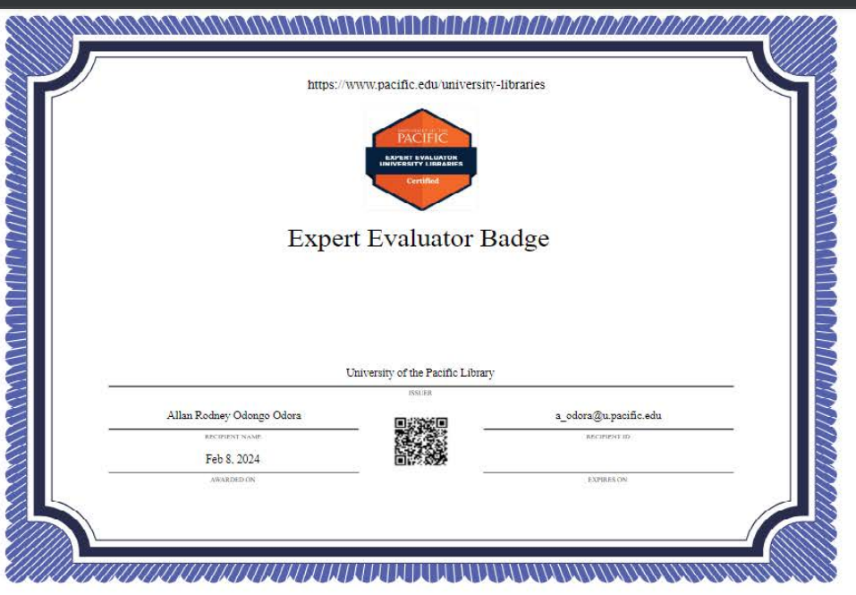
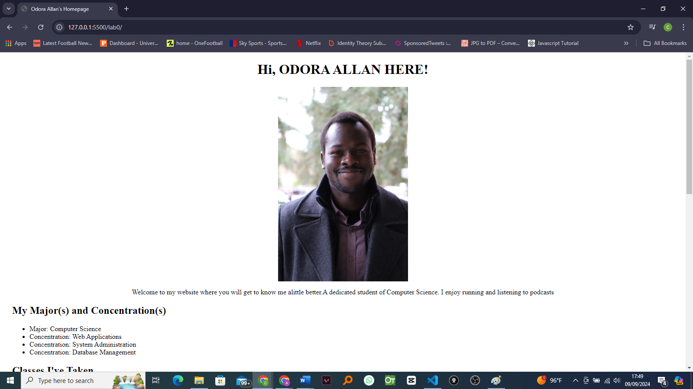

Welcome to my website where you will get to know me a little better. I am a dedicated student of Computer Science. I enjoy running and listening to podcasts.
This project comprises of the creation of my website involving web design, writing HTML using various tags, CSS, and many others.
This course involved research, reading, and how to use various University of the Pacific database libraries. With this badge, I am able to investigate and evaluate vast amounts of information from research databases.
I enjoy running. What is not to love about it? It brings me immense joy and is an incredible mood booster. On top of that, it’s very healthy. I also enjoy buying, wearing, and testing different running shoes.